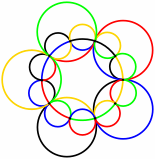
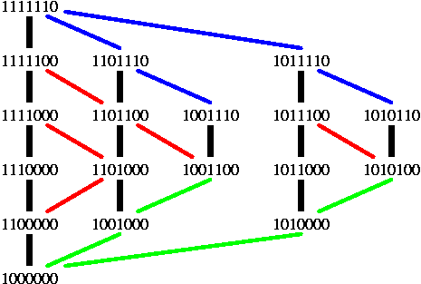

Section 4.5 Symmetric Diagrams for all \(n\)
Subsection 4.5.1 Symmetric Diagrams, Necklaces, and Chains
The Venn diagram, discovered by Stirling Chow and the author in 1996, and shown below

has a number of remarkable properties. First, it has the least number of vertices among all monotone 5-Venn diagrams by a result of [BR] . Secondly, two cut-vertices delimit a \(1/n\) sector which can be rotated to get the full diagram. Of course, the labels on the curves must also be "rotated." The same principles used to discover this diagram can be used to obtain similar 7-Venn diagrams, such as the discovered by the author in 1997 and shown below; the same ideas were used by Hamburger in discovering (see Subsubsection 4.4.1) his diagram for \(n=11\) and by Griggs, Killian and Savage in their amazing construction for symmetric diagrams for all prime \(n\text{,}\) discussed later in this section.Recall that a necklace is an equivalence class of strings under rotation. Here the strings are binary; i.e., taken over the two letter alphabet \(\{0,1\}\text{.}\) Since \(n\) is prime each of the \(n\) rotations is distinct (if the string is not either all 0s or all 1s).
Below we show a lattice of necklaces, the ranks of the lattice giving the number of black beads (the all yellow and all black necklaces have been omitted). The relation is subset inclusion on the black bead numbers. Each cover relation of the lattice has been labelled with the number of the bead that changes. The lattice now has the property that every path from the top to the bottom is a permutation of \(1,2,\ldots,7\text{.}\) These properties are sufficient to allow us to construct a Venn diagram.
Consider each necklace to be a vertex in the dual graph as shown in the figure to the right. The edge numbering allows us to draw \(n\) curves from left-to-right; curve 2 has been colored red. Copying this seven times results in the Venn diagram shown at the bottom of the page. The curves are renumbered in each successive pie-slice by adding 1 (mod \(n\)). Curve one has been colored in green. Note that curve 2 in the defining pie-slice has become curve 1 in the second pie slice, and so on.
When will the resulting diagram have the least number of vertices? Exactly when the middle two levels of the lattice diagram form a perfect matching, as they do here.
Subsection 4.5.2 The GKS Construction
Using ideas similar to those above, Jerrold Griggs, Chip Killian, and Carla Savage [GKS] produced a construction for a symmetric \(n\)-Venn diagram for any prime \(n\text{.}\) The difficult part is constructing a plane embedding of a lattice of necklaces such that every string of length \(n\) is represented exactly once by a necklace. We start by illustrating how to build chains of \(n\)-bit strings, and then show how to link them up to form a dual graph like the one above.
In a binary string, regard each `1’ as a right parenthesis and each `0’ as a left parenthesis and then match parentheses in the usual way as much as possible. For example, in the string
the parentheses in green are matched with the parentheses in red. The black underlined \(\underline{)}\) 1s and \(\underline{(}\) 0s are unmatched. Then chains of strings can be formed by using the Greene-Kleitman successor rule:
| 1 | 0 | 0 | 1 | 0 | 0 | 1 | 1 | 1 | 1 | 0 | 0 | 1 | 0 |
| \(\overline{)}\) | \(\color{red}(\) | \(\color{red}(\) | \(\color{green})\) | \(\color{red}(\) | \(\color{red}(\) | \(\color{green})\) | \(\color{green})\) | \(\color{green}(\) | \(\overline{)}\) | \(\overline{(}\) | \(\color{red}(\) | \(\color{green})\) | \(\overline{(}\) |
Starting with a string \(x\text{,}\) change the first unmatched 0 in \(x\) to a 1 to get its successor \(y\text{.}\)
In the example above, the string 10010011110010 becomes 10010011111010.
Greene and Kleitman showed in [GK] that, if the strings chosen to start the chains are exactly those with no unmatched 1, then the resulting chains (formed by applying the above rule successively to each chain starter until there are no unmatched 0s) form a symmetric chain decomposition of the Boolean lattice. That is, every \(n\)-bit string will occur exactly once in the resulting chains.
Griggs, Killian, and Savage use this rule to construct a symmetric chain decomposition of only \(1/n\)th of the strings to form a necklace diagram like that above. They build a set \(R_n\) with size \((2^n-2)/n\text{,}\) consisting of necklace representatives. To choose the appropriate representatives, they use the notion of a block code for an \(n\)-bit string: let \(x\) be an \(n\)-bit string. If \(x\) begins with 0 or ends with 1, the block code is infinity. Otherwise, \(x\) consists of some number of blocks of the form \(111 \ldots 1000 \ldots 0\text{,}\) and the block code is simply the sequence of the lengths of these blocks.
For example, the block codes of the string 1100100 and all of its 7 rotations are shown below:
| bitstring | block code |
|---|---|
| \(1100100\) | \((4, 3)\) |
| \(1001001\) | \(\infty\) |
| \(0010011\) | \(\infty\) |
| \(0100110\) | \(\infty\) |
| \(1001100\) | \((3, 4)\) |
| \(0011001\) | \(\infty\) |
| \(0110010\) | \(\infty\) |
For each \(n\)-bit string, the rotation chosen as the representative in \(R_n\) is that which has the lexicographically-least block code. For example, for the string above, the rotation 1001100 is the choice to be in \(R_n\text{.}\) The authors of [GKS] show that this rule results in exactly one necklace representative for each equivalence class of strings under rotation, which is unique since \(n\) is prime.
Given \(R_n\text{,}\) the chains are built using this variation of the Greene-Kleitman successor rule:
Start with a string \(x\) in \(R_n\) with exactly one unmatched 1 (which must be in the first position). If there are at least two unmatched 0s in \(x\text{,}\) change the first unmatched 0 to 1 to obtain the successor of \(x\text{.}\) Continue until a string with only one unmatched 0 is reached.
It is shown in [GKS] that this gives a symmetric chain decomposition of the subset of the Boolean lattice defined by \(R_n\text{.}\) The chains so constructed are illustrated below as vertical columns of strings connected by thick black edges.
The dual of the Venn diagram is formed by imposing a tree structure on the set of chains. Identify each chain with its chain starter (i.e., the string with exactly one unmatched 1). The root of the tree is \(10^{n-1}\text{,}\) from the unique chain with \(n-1\) elements. The parent of other chain starters is obtained by changing the rightmost 1 into a 0. For \(n=7\) the tree so constructed is illustrated below with the green edges. To obtain the dual a symmetric tree is formed from the final elements in the chains (strings with one unmatched 0). These edges of this symmetric tree are shown in blue below for \(n=7\text{.}\) The dual graph of a sector like those above can now be created by embedding in the plane the tree as defined, embedding each chain vertically starting from the nodes in the tree, and then embedding the tree attached to the final elements in the chains. The figure below (minus the red edges) shows the plane graph that results from the construction for \(n=7\text{.}\)

This partial order can be turned into a symmetric 7-Venn diagram by the process illustrated in the first section on this page.
In [KRSW] the authors showed that more edges can be added to add vertices to the resulting Venn diagram. In the graph constructed above, the face formed between each chain and the child chain embedded immediately beside it can have edges added; the number of extra edges is equal to one less than the number of elements in the shorter chain. In the figure above, the red edges are extra edges that can be added between adjacent chains.